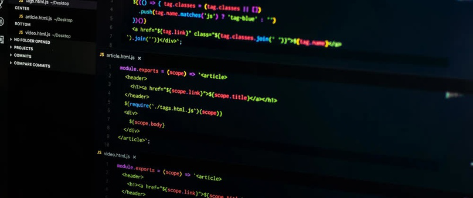
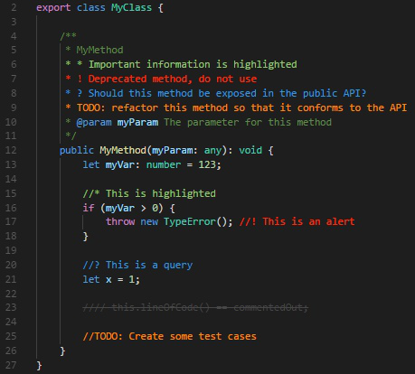
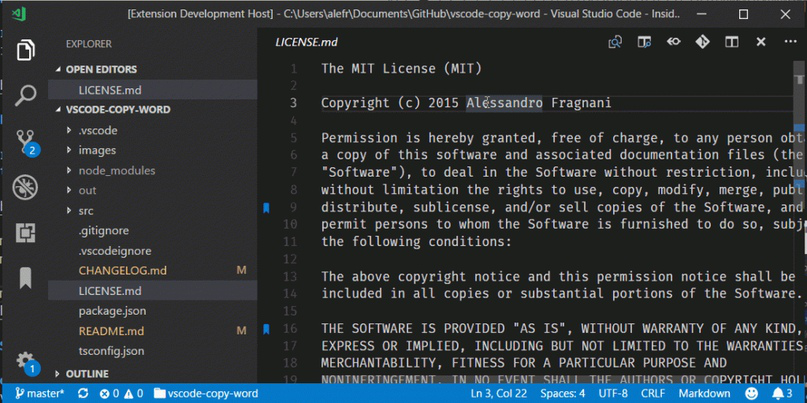
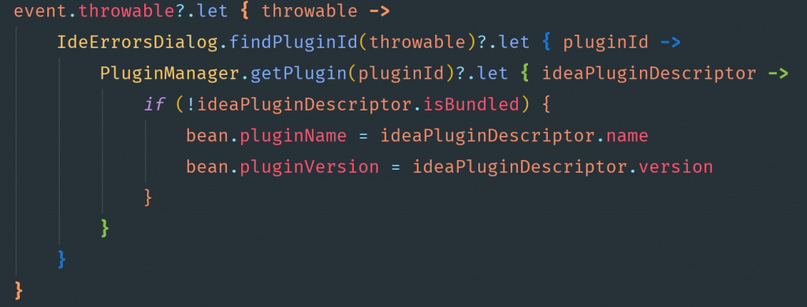
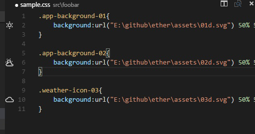
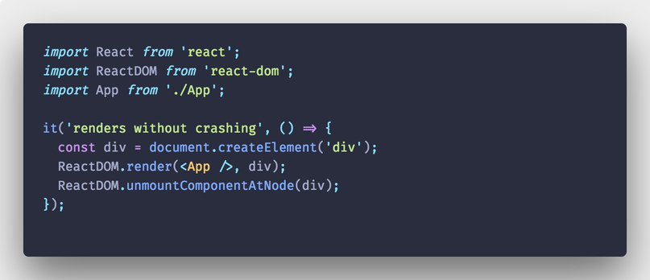

Скачать видео
Скачать видео

20 расширений VS Code, которые вам понравятся
20 расширений VS Code, которые вам понравятся

Перевод статьи «20 VS Code Extensions You’ll Actually Use».
Я просмотрел несколько статей, посвященных расширениям VS Code. Должен сказать, не все эти расширения произвели на меня хорошее впечатление, однако я все же отобрал несколько и пополнил список используемых мной плагинов.
Я думаю, эти расширения будут полезны для любого фронтенд-разработчика, который хочет по максимуму использовать возможности Visual Studio Code. Некоторые из расширений в моем списке относятся к самым рекомендуемым, так что они наверняка у вас уже есть, но какие-то, возможно, будут для вас новостью.
Beautify – облегчает чтение HTML, CSS и JS путем де-минимизации и применения подходящих отступов в вашей ужасной разметке.
Better Comments – создание более дружественных к человеку комментариев в вашем коде. Я использую его все время. В нашей команде разработчиков это обязательное расширение.

Bookmarks – помогает перемещаться по вашему коду, легко и быстро передвигаясь между важными позициями. Я использую это расширение в связке с MetaGo, чтобы не задействовать мышь при написании кода.

Можно делать даже именованные закладки.
MetaGo – для быстрого перемещения курсора и выделения при помощи клавиатуры. Это расширение навсегда изменило мой подход к использованию VS Code. Серьезно.
Log File Highlighter – название говорит само за себя. Предоставляет поддержку .log-файлов, благодаря чему вы сможете читать дампы логов без крови из глаз.
Guides – теперь вам не нужно закрывать и открывать заново все элементы для определения их вложенности. Этот инструмент особенно хорошо работает с уже упомянутым Beautify и Rainbow Brackets, о котором говорится ниже.
Rainbow Brackets – подсвечивает текущий набор скобок, в котором вы находитесь, а для лучшего определения местоположения еще и расцвечивает прочие скобки в другие цвета. Это прекрасное расширение VS Code для JS-разработчиков.

Rainbow Brackets
Image Preview – предоставляет возможность предпросмотра изображения при наведении курсора. Это позволяет легко проверить, на правильное ли изображение поставлена ссылка.

Слева отображается предпросмотр картинок
GitLens – безусловно, одно из самых широко используемых расширений. GitLens это просто must have для VS Code. Он существенно улучшает работу с Git. Для лучшего покрытия можно использовать GitLens вместе с расширениями .gitignore и .diff.
Б Более быстрое написание кода
CSS Peek – вдохновением для этого расширения послужила похожая фича Brackets – CSS Inline Editors. Теперь одна из моих любимых функций Brackets есть и в VS Code.
Stylelint – мы контролируем наш JS на соответствие стандартам, так почему же не делать того же с LESS/SASS/CSS? Отличный инструмент для быстрой чистки небрежно написанного CSS.
Live Sass Compiler – конечно, у вас есть Gulp, Webpack, NPM, Grunt, но иногда вам нужно компилировать/транспилировать ваши SASS/SCSS файлы в файлы CSS в режиме реального времени, с «живой» перезагрузкой браузера. Для этого и нужен Live Sass Compiler.
Live Server – лучший локальный сервер разработки с функцией живой перезагрузки для статических и динамических страниц (даже PHP!).
Version Lens – обновление зависимостей до последней версии для определенного package.json.
DotENV – добавляет поддержку и подсветку .env-файлов. Я очень полагаюсь на это расширение VS Code, когда заливаю код на Heroku, Netlify и т. п.
Polacode – подсвечивает код и делает действительно красивый снимок с цветами вашей темы. Отлично подходит для создания руководств или документации, где вы хотите приложить примеры кода.

Пример скриншота
Settings Sync – позволяет синхронизировать настройки, сниппеты, темы, иконки файлов, запуск, сочетания клавиш, рабочие окружения и расширения между несколькими экземплярами VS Code. Я использую это расширение для синхронизации всего вышеперечисленного на моем ноутбуке, рабочем и домашнем компьютерах. А делается все с помощью всего двух команд.
EditorConfig – перезаписывает пользовательские настройки и настройки рабочего окружения, заменяя их настройками, найденными в файлах .editorconfig. Я использую это расширение VS Code для применения специфических правил в отдельных проектах на машинах всей команды.
Надеюсь, эти расширения пригодятся вам в вашей ежедневной работе с VS Code! Если знаете и другие полезные плагины, поделитесь в комментариях.
Источник: techrocks.ru
***
Читайте на нашем сайте: